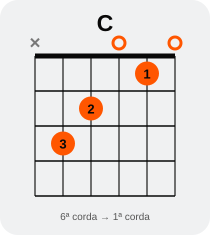
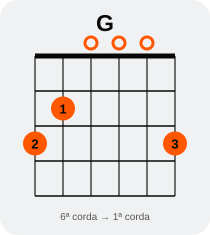
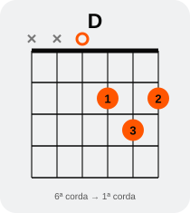
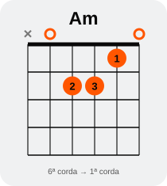
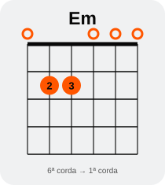

GUIA DE BOLSO
TROCA DE
ACORDES
Exercícios práticos para parar de travar entre um acorde e outro.
Felipe Figueroa
Oficina do Violão
Toda semana, um próximo passo.
Oficina do Violão
Toda semana, um próximo passo.
GUIA DE BOLSO
Exercícios práticos para parar de travar entre um acorde e outro.
A dificuldade real
Talvez você consiga montar C, G, D, Am e Em separadamente. Mas, quando uma sequência começa, sua mão se perde entre um desenho e outro.
Conhecer um acorde e trocar de acorde são habilidades relacionadas, mas diferentes. Uma pode estar mais desenvolvida que a outra.
Você não precisa aprender mais vinte acordes agora. Precisa aprender a se movimentar melhor entre os que já conhece.
02Pouco de cada vez
Escolha dois acordes que você já conhece e que ainda travam na sequência.
Faça a troca devagar. Confira se os dedos chegaram e se as cordas devem soar.
Repita em sessões curtas. Aumente o andamento só quando o movimento estiver organizado.
Volte a este material sempre que uma nova troca dificultar uma música.
Não tente resolver todas as trocas no mesmo dia. Escolha uma ou duas e observe o que melhora.
03Antes de repetir
Toque uma sequência curta e pare para observar. O problema aparece quando você sai de um acorde? Quando chega ao próximo? Ou quando a mão direita continua batendo?
Toque G → D → Em → C sem se preocupar com velocidade. Marque a passagem em que a música tende a parar.
Você precisa olhar cada dedo para montar o próximo acorde?
Seus dedos se afastam muito das cordas?
Você só descobre o próximo acorde depois que ele já deveria soar?
A resposta indica onde concentrar a prática. Não é uma prova; é um mapa para o próximo exercício.
04O erro comum
Se a dificuldade é G → D, tocar a música sempre desde o início faz você praticar muito o trecho fácil e pouco o movimento que trava.
Separe essa passagem. Faça o movimento em câmera lenta. Confira o som. Repita também no sentido contrário: D → G.
Volte à música depois que conseguir realizar a troca sem desmontar toda a mão.
05Um hábito técnico
Ao construir uma forma, pense na direção da 6ª corda para a 1ª corda. Dê à mão uma ordem de trabalho consistente.
Uma corda que não faz parte do acorde não precisa receber dedo. A sequência acima descreve a ordem mental e motora usada para construir a forma.
06Faça isso agora
No acorde de C, por exemplo, a 6ª corda não é tocada. Comece a organizar a forma a partir da 5ª: dedo 3 na 3ª casa. Depois, dedo 2 na 4ª corda, 2ª casa; dedo 1 na 2ª corda, 1ª casa.
5ª → 4ª → 2ª
Os dedos entram na ordem das cordas que recebem dedos, de cima para baixo.
Isso pode parecer pequeno agora. Com novas formas, acordes móveis, pestanas e extensões, ter uma lógica consistente ajuda a reduzir movimentos aleatórios.
Veja os diagramas do C e dos outros acordes nas páginas 16 e 17.
07Menos viagem
Uma troca demora mais quando cada dedo sai muito do braço e precisa procurar o caminho de volta. Em vez de abrir a mão inteira, experimente liberar a pressão e manter os dedos próximos das cordas.
Você levanta os dedos demais? Afasta a mão do braço? Recomeça cada acorde do zero?
Solte somente o necessário, mantenha a mão perto e procure o próximo ponto de apoio.
Não force os dedos para ficarem colados às cordas. A meta é eliminar viagens desnecessárias, mantendo a mão solta.
08Antes de mover
Nem toda troca pede que a mão se reorganize completamente. Às vezes um dedo permanece; às vezes dois dedos mudam pouco de região; às vezes a forma seguinte se parece com a anterior.
Olhe os dois diagramas lado a lado.
Veja se algum dedo pode ficar perto da próxima posição.
Faça a troca lentamente e confirme se ela soa limpa.
Qual é o primeiro dedo que precisa chegar para a próxima forma começar a fazer sentido?
Essa referência muda conforme os acordes e a digitação. Observe o movimento real da sua mão.
09Olhe para a frente
Enquanto o acorde atual ainda soa, você já precisa saber qual forma vem depois.
Leia a sequência antes de tocar. Visualize o próximo desenho. Durante a última pulsação do acorde atual, prepare mentalmente a direção do movimento.
Antecipar não significa trocar antes da hora. Significa chegar ao momento da troca sabendo o destino.
10Sem metrônomo
Escolha dois acordes que você já consegue montar. Vamos usar G ↔ D como exemplo.
Faça de 6 a 10 trocas. Se um movimento falhar, diminua ainda mais a velocidade e encontre a causa.
11Uma direção por vez
G → D
G → D
G → D
G → D
Faça quatro passagens em uma direção. Pare um instante, confira a mão e depois inverta.
D → G
D → G
D → G
D → G
Repare qual direção exige mais procura dos dedos. Dedique mais repetições a ela na próxima sessão.
12Inclua pulsação
Depois que a troca livre estiver clara, dê quatro tempos para cada acorde. Conte em voz alta e use apenas uma batida simples para baixo no primeiro tempo.
G: 1 · 2 · 3 · 4
D: 1 · 2 · 3 · 4
O próximo acorde deve começar no novo 1. Se a mão se perder, desacelere. Não há problema em ficar vários minutos no mesmo andamento.
Quando quatro tempos estiverem confortáveis, experimente dois tempos por acorde.
13Continuidade
Use batidas simples para baixo. A mão direita segue marcando tempos regulares enquanto a esquerda prepara o acorde seguinte.
Se uma troca atrasar, mantenha a pulsação e observe em qual momento a mão esquerda perdeu o caminho. Volte ao exercício livre se precisar.
Uma batida por tempo. Quatro tempos em cada acorde.
Reduza para dois tempos. Só então experimente outra levada.
Este exercício não ensina uma levada nova. Ele treina a troca dentro de uma continuidade musical.
14Leve para a música
Escolha uma sequência curta. Faça uma volta só para reconhecer as formas. Depois repita procurando o ponto exato em que a troca ainda trava.
G → D → Em → C
Quatro tempos por acorde. Depois, se estiver confortável, dois tempos.
C → G → Am → Em
Observe o sentido de cada troca e não acelere por impulso.
Se você já conhece Fmaj7, experimente também C → G → Am → Fmaj7. Ele substitui o F com pestana somente como opção de prática, não como equivalente em toda música.
15Leia antes de tocar
Da esquerda para a direita: 6ª até 1ª corda. × = não tocar; ○ = corda solta; número dentro do ponto = dedo sugerido.


A digitação é uma sugestão para este guia. Você pode encontrar outras digitações válidas.
16Três formas úteis
Confira quais cordas não devem ser tocadas. O som limpo depende tanto dos dedos posicionados quanto das cordas escolhidas.



Em tem apenas dois dedos pressionados. Isso não torna toda troca com Em automática: a mão ainda precisa chegar na hora certa.
Use os diagramas para conferir o destino da mão. Depois, volte a olhar menos para o papel e mais para o movimento.
17Troca 01
Monte G e toque uma vez. Antes de soltar, visualize D: terceira e primeira cordas na 2ª casa; segunda na 3ª. A 4ª corda fica solta.
Pergunta para anotar: em qual direção você precisa procurar mais a forma?
18Troca 02
Compare os diagramas. Perceba que você precisa reorganizar a mão, mas não precisa afastá-la do braço inteiro. Procure mover cada dedo diretamente para a próxima região.
Se você acerta os dedos mas a batida para, volte à contagem da página 13. O desafio agora é coordenar as duas mãos.
Quatro acordes
Toque cada acorde por quatro tempos. Faça três voltas, sem acelerar. Se travar, anote qual seta causou a pausa.
Isole só essa seta por dois minutos. Volte à sequência e compare: a pausa diminuiu? A mão chegou com mais segurança?
Não precisa tocar uma canção inteira para perceber progresso. Uma progressão curta já revela muito.
20Sem corrida
Escolha dois acordes. Faça dez tentativas em uma direção. Conte apenas as trocas em que a forma chegou corretamente, o acorde soou e o movimento esteve sob controle.
01 · 02 · 03 · 04 · 05
06 · 07 · 08 · 09 · 10
Se alguma troca falhar, não esconda o erro tocando mais rápido. Observe a causa e tente de novo lentamente.
Uma tentativa que revelou o problema também ajudou você a aprender, mesmo que não entre na contagem.
21Observe sua prática
Registre apenas o que ajuda a decidir o próximo passo. “Trocas limpas” é a quantidade de tentativas que cumpriram os critérios da página anterior.
| Dia | Acordes | Trocas limpas | Observação |
|---|---|---|---|
Exemplo de observação: “D → G é mais difícil”; “dedo 3 chega atrasado”; “consigo manter quatro tempos”.
22Uma sessão possível
Monte cada acorde separadamente. Confira as cordas que devem soar.
Faça a troca lentamente, nos dois sentidos, sem contagem.
Inclua quatro tempos por acorde.
Toque uma progressão curta com batidas simples.
Toque livremente e perceba o que ficou mais fácil.
Se tiver mais tempo
Acordes individuais, som limpo e ordem de montagem.
Troca livre: observe distância e destino dos dedos.
Troca com contagem e batida para baixo.
Progressão de três ou quatro acordes.
Desafio das 10 trocas ou registro do que precisa melhorar.
Sessões curtas e repetidas ajudam a manter o foco. Cada pessoa avança em um ritmo; este plano não promete domínio em um prazo fixo.
24Conferência rápida
Guia de consulta
Os dedos não chegam: troca livre e movimento mínimo (páginas 8 e 11).
Uma direção é pior: blocos separados G → D e D → G (página 12).
O acorde soa abafado: confira o diagrama e toque corda por corda (páginas 16 e 17).
A batida para: quatro tempos por acorde e mão direita constante (páginas 13 e 14).
Você esquece o próximo acorde: leia e antecipe a sequência (página 10).
Trocar acordes é uma habilidade específica. Você pode voltar ao ponto que mais precisa, sem recomeçar o guia inteiro.
26Continue
Precisa descobrir o que está travando agora, trabalhar aquilo e então seguir para o próximo passo.
Se este guia ajudou você a perceber a diferença entre saber um acorde e conseguir trocá-lo, continue observando a prática com a mesma clareza. Uma dificuldade de cada vez.
Toda semana,
um próximo passo.
Felipe Figueroa
Oficina do Violão
Esse é só o começo
Aprender violão não precisa ser uma sequência de recomeços. O Ré Maior é nosso ponto de encontro para quem está começando, retomando ou decidiu continuar sua jornada com o instrumento.
O nome representa um dos primeiros acordes, o começo da caminhada e a entrada em algo maior dentro da Oficina do Violão.
ENTRAR NO RÉ MAIORToque no botão no PDF ou aponte a câmera para o QR Code.
28